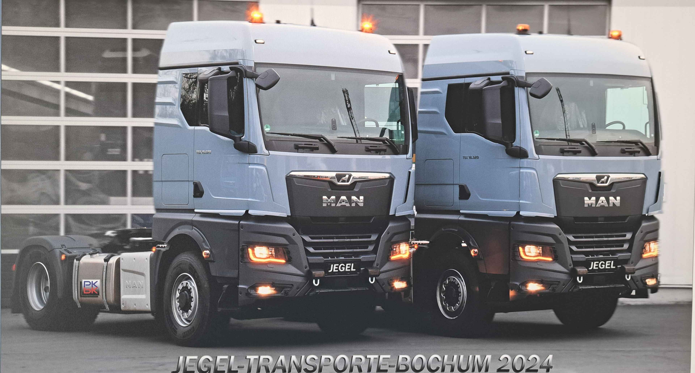

Willkommen bei Jegel Transporte GmbH
Wir sind Ihr verlässlicher Partner für professionelle Transport- und Logistiklösungen in Bochum und Umgebung. Mit unserer langjährigen Erfahrung und unserem engagierten Team bieten wir Ihnen maßgeschneiderte Dienstleistungen, die genau auf Ihre Bedürfnisse zugeschnitten sind.
Unser Unternehmen
Die Jegel Transporte GmbH ist ein familiengeführtes Unternehmen mit Sitz in Bochum. Seit unserer Gründung haben wir uns auf den sicheren und pünktlichen Transport von Gütern spezialisiert. Unsere modernen Fahrzeuge und unsere erfahrenen Fahrer sorgen dafür, dass Ihre Waren zuverlässig ans Ziel gelangen.
Unsere Dienstleistungen
Wir bieten eine breite Palette an Transport- und Logistikdienstleistungen an, darunter:
- Stückgut- und Sammelguttransporte
- Expressdienste
Kontaktieren Sie uns für ein individuelles Angebot und erfahren Sie, wie wir Ihnen helfen können.